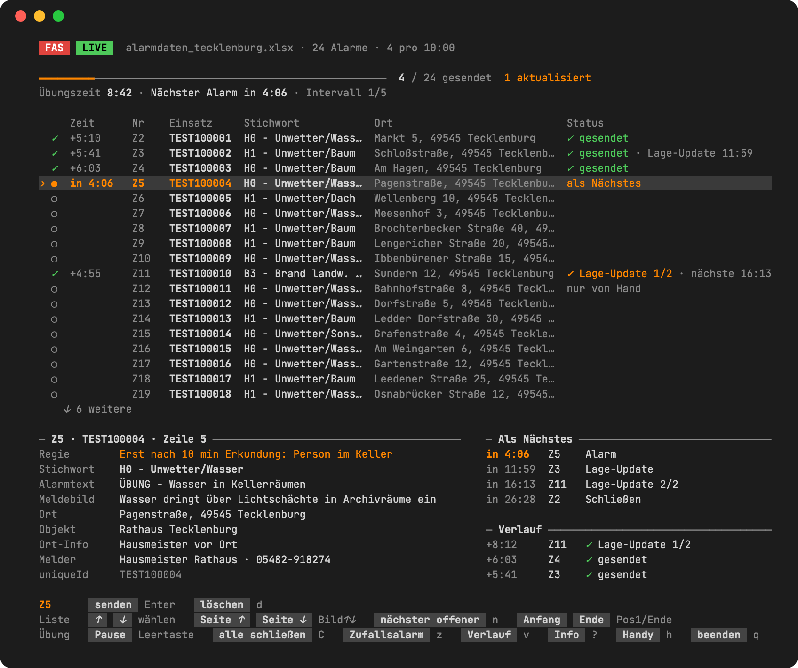
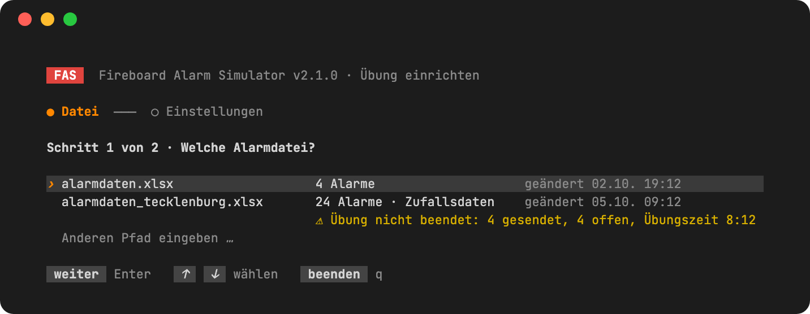
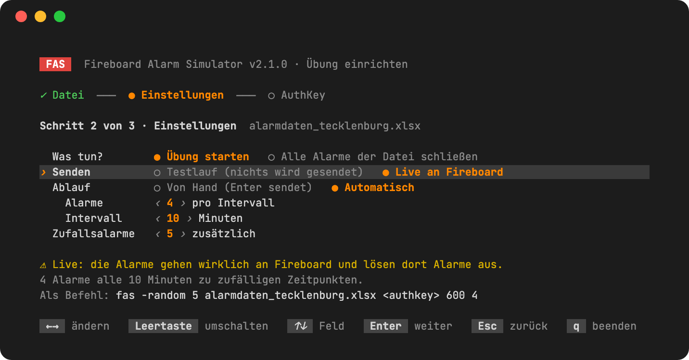
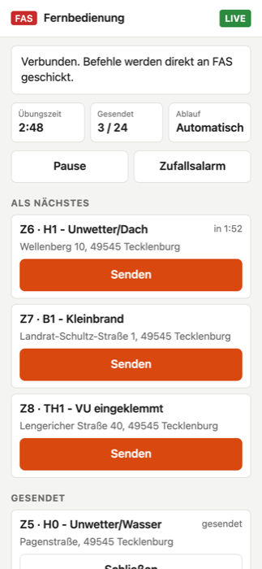

Übungsalarme für Fireboard – aus einer Excel-Liste.
Du planst eine Übung für deine Feuerwehr, zum Beispiel eine Unwetterlage mit vielen Einsätzen gleichzeitig? Der Fireboard Alarm Simulator (FAS) spielt dabei die Leitstelle: Er schickt die Einsätze aus deiner Excel-Liste in euren Fireboard-Alarmeingang – nach und nach, zu festen Zeiten oder auf Knopfdruck. Eure Führungskräfte arbeiten sie in Fireboard ab wie echte Einsätze.
Neueste Version herunterladen Windows 10/11 und Mac · kostenlos · keine Installation
Beta Vorabversion 2.1.0-beta.1 nur zum Testen, nicht für Übungen – was ist neu?
Ein unabhängiges Projekt – nicht von Fireboard entwickelt und in keiner Verbindung zu Fireboard.

Alle Alarme sind in Fireboard als Testalarme gekennzeichnet. FAS alarmiert keine Einsatzkräfte – kein Piepser, keine SMS, keine App. Die Einsätze landen nur im Alarmeingang.
Was FAS kann
- Automatisch verteilen
- Zum Beispiel 4 Einsätze alle 10 Minuten, jeweils zu zufälligen Zeitpunkten.
- Drehbuch
- Bestimmte Einsätze zu festen Zeiten – „nach 20 Minuten brennt die Scheune“.
- Von Hand
- Die Übungsleitung schickt jeden Einsatz selbst ab und reagiert auf die Lage.
- Lageänderungen
- Ein Einsatz verschärft sich im Lauf der Übung, etwa von B2 auf B3.
- Zufallsalarme
- FAS würfelt Einsätze aus einer Stichwort- und einer Adressliste zusammen. Die Scheune brennt auf einem Hof, der Baum liegt auf einer Straße.
- Handy als Fernbedienung
- QR-Code scannen und die Übung vom Handy aus steuern. Ohne App.
- Testlauf
- Alles ausprobieren, ohne dass etwas an Fireboard gesendet wird.
- Protokoll
- Jede Meldung mit Uhrzeit als CSV-Datei – für die Nachbesprechung.
- Fortsetzen
- Laptop ausgegangen? Die Übung geht dort weiter, wo sie aufgehört hat.
Was du brauchst
- einen Laptop oder PC mit Windows 10/11 oder einen Mac
- ein Fireboard-Konto mit dem Modul Alarmverarbeitung und den dazugehörigen AuthKey (Fireboard-Portal → Benutzerkonto → AuthKey-Verwaltung, Eintrag „Alarmverarbeitung PLUS“)
- eine Excel-Liste mit deinen Übungseinsätzen – zwei Beispiele sind dabei
So läuft es ab
-
Herunterladen und entpacken
Auf der Download-Seite die Zip-Datei für dein System laden und entpacken. Darin liegen das Programm, zwei Beispiel-Listen und die Anleitung.
-
Starten und Liste wählen
Doppelklick auf
fas.exe. Mit den Pfeiltasten die Excel-Liste auswählen, dann Enter. Eigene Listen einfach in denselben Ordner legen.
-
Einstellen
Testlauf oder live, von Hand oder automatisch, wie viele Zufallsalarme. Beim ersten Mal auf Testlauf lassen – dann kommt in Fireboard nichts an.

-
Übung live
Für die echte Übung Live wählen und den AuthKey eingeben. Der Key wird nur gespeichert, wenn du es möchtest – dann verschlüsselt auf deinem Computer.
-
Aufräumen
Nach der Übung schließt C C alle gesendeten Einsätze in Fireboard. Neben der Excel-Liste liegt ein Protokoll mit jeder Meldung, Uhrzeit und Übungszeit.
Die Excel-Liste
Jede Zeile ist ein Einsatz, in der ersten Zeile stehen die Spaltennamen. Am einfachsten nimmst du eine der Beispiel-Listen und änderst sie ab.
| externalNumber | keyword | announcement | location | situation |
|---|---|---|---|---|
| UEB-001 | H1 - Unwetter/Baum | ÜBUNG - Baum auf Fahrbahn | Brochterbecker Straße 40, 49545 Tecklenburg | Baum liegt quer über beide Fahrstreifen |
| UEB-002 | H0 - Unwetter/Wasser | ÜBUNG - Wasser im Keller | Markt 5, 49545 Tecklenburg | ca. 20 cm Wasser im Keller |
Weitere Spalten gibt es für Meldende, Koordinaten, feste Zeiten
(zeitpunkt) und Lageänderungen (update_keyword,
update_situation, update_after). Alle stehen in der
Spaltenübersicht.
Handy als Fernbedienung
Die Übungsleitung muss nicht am Laptop sitzen. Mit dem Handy lassen sich Alarme senden, Lageänderungen auslösen, Einsätze schließen und die Übung pausieren – von überall, wo das Handy Internet hat.
- Am Laptop h drücken, es erscheint ein QR-Code.
- Mit der Handy-Kamera scannen. Die Fernbedienung öffnet sich im Browser und zeigt eine vierstellige Zahl.
- Stimmt die Zahl mit der am Laptop überein, dort J drücken.
Die Verbindung ist Ende-zu-Ende verschlüsselt. Ein Handy darf erst steuern, wenn es am Laptop freigegeben wurde, und sieht den AuthKey nie. Im Live-Betrieb muss jeder Alarm zweimal angetippt werden, damit nichts aus Versehen rausgeht.

Häufige Fragen
Werden unsere Einsatzkräfte alarmiert?
Nein. FAS schickt die Einsätze nur in den Fireboard-Alarmeingang. Piepser, Sirene, SMS oder Alarmierungs-Apps werden nicht ausgelöst.
Sieht man in Fireboard, dass es eine Übung ist?
Ja, alle Alarme sind als Testalarme gekennzeichnet. Zusätzlich empfehlen wir, im Alarmtext „ÜBUNG“ voranzustellen – wie in den Beispiel-Listen.
Wird mein AuthKey gespeichert?
Nur, wenn du es willst. Ohne dein Zutun gibst du ihn bei jedem Start ein. Auf Wunsch speichert FAS ihn verschlüsselt auf deinem Computer – siehe AuthKey speichern.
Der Laptop ist mitten in der Übung ausgegangen.
Einfach FAS wieder starten. Es fragt „Letzte Übung fortsetzen?“ – mit J geht es dort weiter, wo es aufgehört hat. Schon gesendete Einsätze werden nicht noch einmal geschickt.
Windows warnt beim ersten Start.
„Der Computer wurde durch Windows geschützt“ ist bei neuen Programmen normal. Auf Weitere Informationen → Trotzdem ausführen klicken.
Wie starte ich FAS auf dem Mac?
Die Zip-Datei für Apple-Chip (macos-arm64) oder Intel
(macos-intel) laden und entpacken. Beim ersten Mal im
Terminal die Download-Sperre entfernen:
cd ~/Downloads/fireboard-alarm-simulator-…-macos-arm64 xattr -d com.apple.quarantine fas ./fas
Danach genügt ein Doppelklick auf fas im Finder.
Fehler 401
Der AuthKey ist falsch, oder das Modul Alarmverarbeitung ist für euer Konto nicht freigeschaltet. Den Key im Fireboard-Portal prüfen.
Alles Weitere – Tasten, alle Spalten, Zufallsalarme einrichten, Protokoll, Fehlermeldungen – steht in der vollständigen Anleitung.
Versionen
Was sich geändert hat. Oben steht immer die aktuelle Version für den Übungsbetrieb, darunter Vorabversionen (Beta) zum Testen, dann die älteren Versionen. Alle Downloads stehen auf der Versionsseite.
2.0.0 Aktuelle Version 28. September 2026
- Handy-Fernbedienung: klareres Koppeln, zuverlässiger QR-Code, noch nicht ausgeführte Befehle sind sichtbar.
- FAS und die Steuerseite gleichen ihre Versionen ab.
2.1.0-beta.1 Beta · nur zum Testen 2. Oktober 2026
Vorabversion, noch nicht fertig getestet. Für Übungen bitte die aktuelle Version 2.0.0 verwenden. Wer die Neuerungen ausprobiert: Rückmeldungen gern über Feedback.
- Übung wiederholen: Wird dieselbe Excel-Liste noch einmal durchgespielt, erscheinen die Alarme in Fireboard wieder als neue Einsätze. Bisher blieben sie aus, weil Fireboard sie für bereits bekannte Einsätze hielt.
- Alle Alarme schließen schließt, was laut Protokoll noch offen ist – auch aus früheren Übungen und einschließlich der Zufallsalarme. Die Protokolldatei neben der Excel-Liste dafür nicht löschen.
- AuthKey speichern: Auf Wunsch merkt sich FAS den AuthKey – verschlüsselt über das Windows-Benutzerkonto bzw. im Mac-Schlüsselbund, nie im Klartext. Im Startbildschirm bei der Eingabe mit Tab ankreuzen.
- Key-Datei unter Windows: Key-Dateien aus PowerShell oder dem Editor (UTF-16) werden richtig gelesen und auch neben dem Programm gefunden. Optionen dürfen hinter der Excel-Datei stehen.
- Fenster bleibt offen: Bei einem Fehler beim Start schließt sich das Fenster unter Windows nicht mehr sofort – die Meldung bleibt lesbar.
- Diagnose: Bei einem Absturz schreibt FAS die Datei
fas_diagnose.txt, mit-diagnoseauch bei jedem Start. Sie enthält keinen AuthKey und hilft bei der Fehlersuche.
1.4.0 27. September 2026
- Neu: das Handy als Fernbedienung, Ende-zu-Ende verschlüsselt.
1.3.0 25. September 2026
- Neue Anleitung mit Bildschirmfotos.
1.2.0 25. September 2026
- Neue Oberfläche.
1.1.0 23. September 2026
- Erste Version.
Feedback
Fehler gefunden oder eine Idee? Schreib es als Issue auf GitHub (dafür brauchst du ein kostenloses GitHub-Konto). Issues sind öffentlich – bitte nie den AuthKey mitschicken.
Ohne GitHub-Konto geht es auch per E-Mail: robert.entfernen@nicht-fireboard-simulator.de